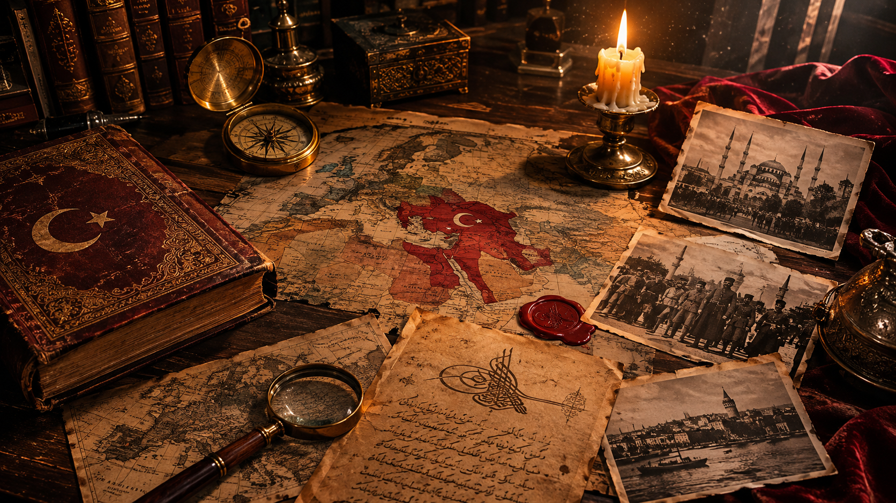

HISTORICAL REPOSITORY
THE ARCHIVE
Research-driven stories from history, geopolitics, mystery, war, conflict and the modern world.
YouTube Archive
FEATURED DOCUMENTARIES

▶
LATEST RELEASE • OTTOMAN KHILAFAT
Last of Khilafat | Sultan Abdul Hamid II Aur Muslim Unity
What was the true significance of the Caliphate during the era of Sultan Abdul Hamid II? Was Pan-Islamism merely a political strategy to save the Ottoman Empire, or was it a religious and diplomatic vision for Muslim unity?

▶
AI TIME-TRAVEL VLOG • 1876 ISTANBUL
I Travelled to 1876! — Ottoman Istanbul
I travelled back in time to 1876 Ottoman Istanbul through AI historical time-travel vlogging—experiencing the imperial streets, Bosphorus shores, and living history of the Ottoman Empire firsthand.
Ongoing Series
SULTAN ABDUL HAMID II
This series is currently ONGOING ON INSTAGRAM